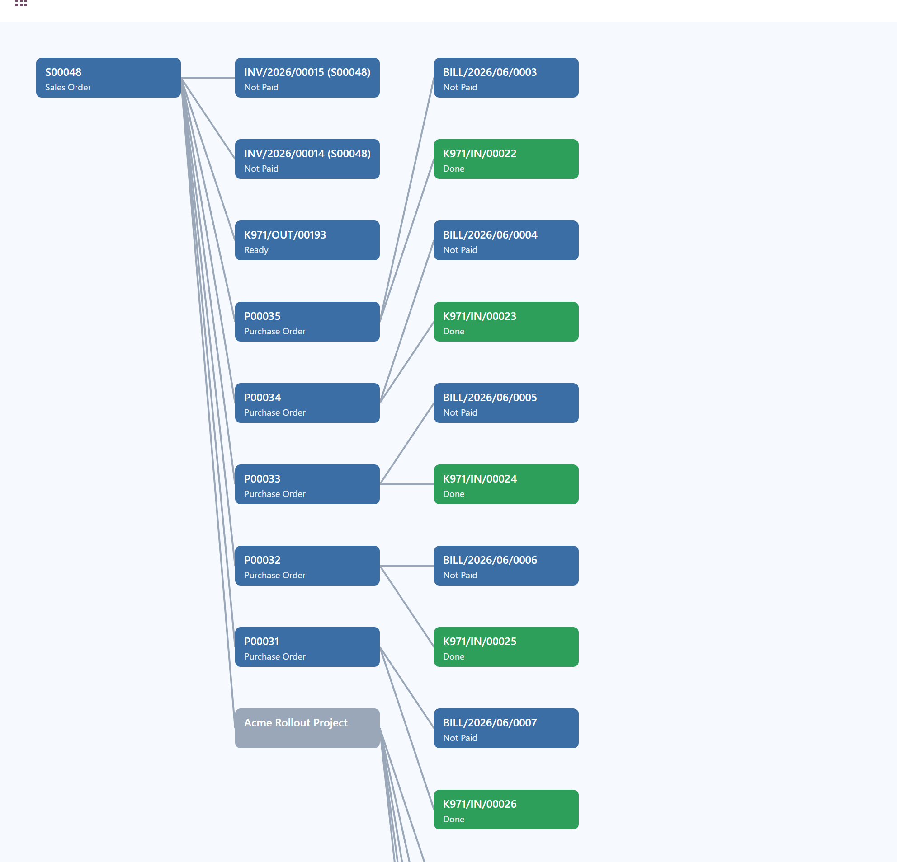
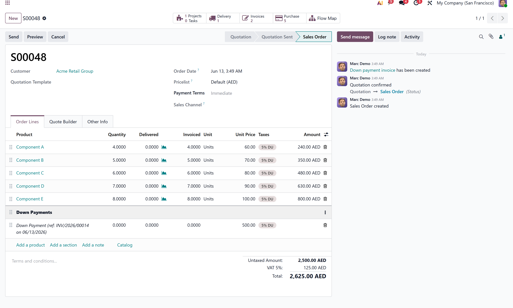

Transaction Flow Visualizer
See the whole chain of a transaction on one screen.
A Flow Map button on every order, invoice and transfer.
Trace a Sales Order to its Purchases, Receipts, Deliveries and Invoices without clicking through menu after menu.
|
5
Document Types
|
1 Click
From the Record
|
0
Data Stored
|
Free
LGPL-3
|
v19
Compatible
|
What this module does
Odoo links your documents through smart buttons and origin fields, but once a chain grows, a Sale Order that creates a Purchase Order, a Receipt, a Manufacturing Order and several Invoices, there is no single screen that shows the whole picture.
Transaction Flow Visualizer adds a Flow Map button to Sales Orders, Purchase Orders, Manufacturing Orders, Invoices and Deliveries. Click it and the module draws an interactive chart of every related document, colour coded by status, with one click to open any record. Nothing is stored, the map is built live each time.
|
🗺
One-Click Flow Map
A Flow Map button on the record draws the full web of linked documents at once, so you can trace where an order stands in a single glance. |
🟢
Status at a Glance
Every box is colour coded by status, draft, in progress, done or paid, so delays and bottlenecks stand out immediately. |
🔒
Read-Only and Secure
The map only reads data and stores nothing. Every document is read as the logged-in user, so access rights always apply. |
|
📋 Five Document Types
A Flow Map button on Sales Orders, Purchase Orders, Manufacturing Orders, Invoices and Deliveries. |
🔗 Click to Open
Click any box to open the underlying record, then return to the map to keep tracing the chain. |
|
📁 Project and Task Nodes
When the Project app is installed, linked Projects and Tasks appear on the map automatically. |
🏢 Multi-Company Aware
Because the map reads as the current user, documents the user cannot see simply do not appear. |
|
📦 Nothing Stored
The map is built live on demand. It adds no tables, no background jobs and no load on normal screens. |
✨ Want More Control
Flow Visualizer Pro adds no-code configuration for any model, grouping, zoom, filters and export. |
How it works
1 |
Open a record
Go to any Sales Order, Purchase Order, Manufacturing Order, Invoice or Delivery. |
2 |
Click the Flow Map button
The button sits with the other stat buttons at the top of the record. |
3 |
Read the chain and jump in
The map lays out every linked document with status colours. Click any box to open that record. |
Screenshots
THE WHOLE CHAIN ON ONE SCREEN: linked orders, receipts, invoices, project and tasks

ONE CLICK FROM THE RECORD: a Flow Map button on every order, invoice and transfer

Technical information
|
Version
19.0
|
License
LGPL-3 (Free)
|
Editions
Community & Enterprise
|
Apps Covered
Sales, Purchase, MRP, Stock, Accounting
|
Technical name: codeerts_transaction_flow_visualizer · Data stored: none, the map is built live and read-only
Frequently asked questions
Open the order and click the Flow Map button. The module draws an interactive chart of the linked purchase orders, receipts, deliveries and invoices on one screen.
No. The map is read-only and stores nothing. It is built live each time you open it and never writes to your records.
Yes. Every document is read as the logged-in user, so record rules and company access are always applied. Documents a user cannot see do not appear.
This free version covers Sales, Purchase, Manufacturing, Delivery and Invoice. For no-code configuration on any model, with grouping, zoom, filters and export, see Flow Visualizer Pro.
Yes. It is built for Odoo 19.0 and runs on both Community and Enterprise.
The team behind this module
About CODEerts
Full-Service Odoo ERP Agency · Solutions That Scale
Every module in our store is built from real client work, tested in production and maintained long-term by a team of Odoo certified consultants. When you need more than an app, we deliver the full solution.
|
🏗️ Implementation
Full Odoo roll-outs from requirements to go-live, across any industry and company size. |
🧩 Custom Development
Bespoke modules, OWL components and business logic built precisely to your workflow. |
🔄 Migrations
Zero-data-loss upgrades from older Odoo versions with full custom module porting. |
|
🔌 Integrations
Payment gateways, shipping carriers, biometric devices, eCommerce and third-party APIs. |
🔍 Odoo Audits
Performance, security and code-quality reviews that surface risks before they become problems. |
🧑💻 Support & Training
Ongoing helpdesk, user training and monthly retainers so your team stays productive. |
Odoo Certified |
6+ Years |
50+ Projects |
10+ Industries |
More from CODEerts
Other apps we build to make Odoo do more. Tap any card to open it on the Odoo Apps Store.
FREE Archive Anything | FREE Smart Mail Rebrand | FREE Duplicate Record Detector | FREE Audit Log Viewer |
AI Dashboard Builder | Advance Payment Pro | Dual Book & Tax Depreciation | Smart Duplicate Detector |
See every CODEerts app on the Odoo Apps Store.